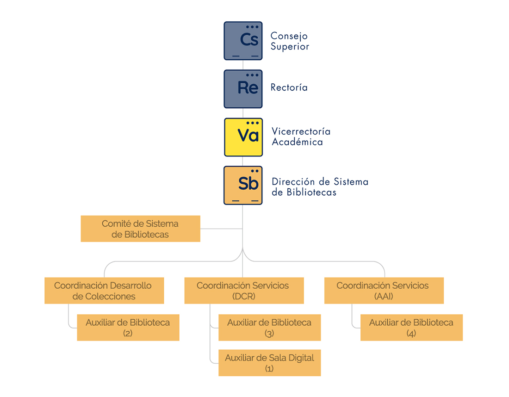
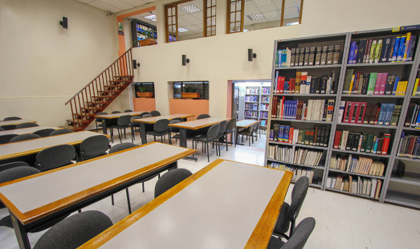
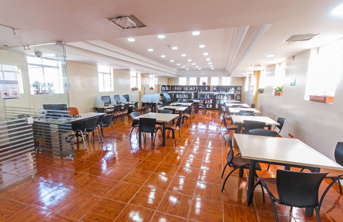

SISTEMA DE BIBLIOTECAS
MISIÓN
Satisfacer las necesidades de información de la comunidad académica, investigativa y de proyección social, a través de servicios de calidad que desarrollen competencias para el acceso y uso a los recursos bibliográficos y tecnológicos, dentro de los principios y valores que rigen a la Institución.
VISIÓN
Ser líderes en la gestión de información, logrando reconocimiento por el trabajo cooperativo a nivel nacional e internacional en un ambiente laboral participativo.
ORGANIGRAMA
En el siguiente diagrama podrás observar nuestra estructura organizacional

HORARIOS
El Sistema de Bibliotecas presta sus servicios en dos (2) sedes:
Sede: Hospital San José - Biblioteca Arturo Aparicio Jaramillo


Horario: lunes a viernes de 7:00 a.m. a 7:00 p.m.
Sábados de 8:00 a.m. a 3:00 p.m.
Dirección: Carrera 19 No. 8 A 32
Sede: HIUSJ - Biblioteca Darío Cadena Rey


Horario: lunes a viernes de 7:00 a.m. a 10:00 p.m.
Sábados de 8:00 a.m. a 3:00 p.m
Dirección: Carrera 52 No. 67 A 71
SISTEMA DE GESTIÓN DE CALIDAD
Estamos Certificados en Calidad bajo la norma “ISO 9001:2015, Sistemas de Gestión de la Calidad: requisitos” por ICONTEC, máximo organismo de certificación colombiano, quien a su vez nos avala internacionalmente con el certificado de calidad de IQNET, con alcance a la Gestión de Colecciones y Servicios de información del Sistema de Bibliotecas.
POLÍTICA DE CALIDAD
Apoyar el proceso académico, investigativo y de proyección social de la Institución, garantizando el acceso, disponibilidad, actualidad y calidad de los recursos bibliográficos y servicios de información, contando con la infraestructura física y tecnológica adecuada, con el equipo humano idóneo, basados en una mejora continua de nuestros procesos.
OBJETIVOS DE CALIDAD
- Apoyar el proceso académico, investigativo y de proyección social de la Universidad
- Garantizar el acceso, disponibilidad, actualidad y calidad de los recursos bibliográficos y servicios de información
- Contar con la infraestructura física y tecnológica adecuada
- Asegurar la competencia del personal
- Mejorar continuamente nuestro Sistema de Gestión de Calidad